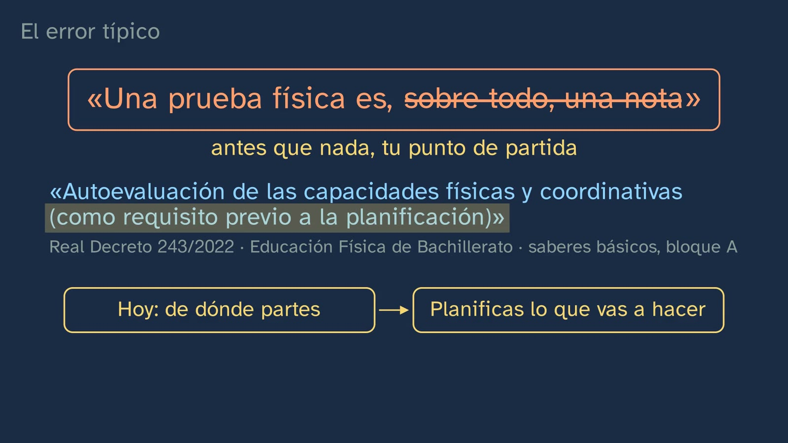
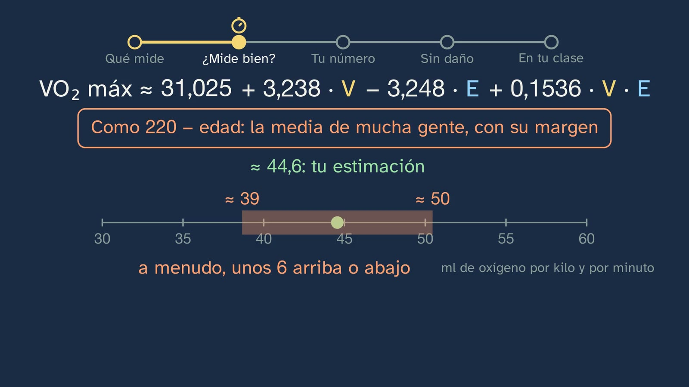
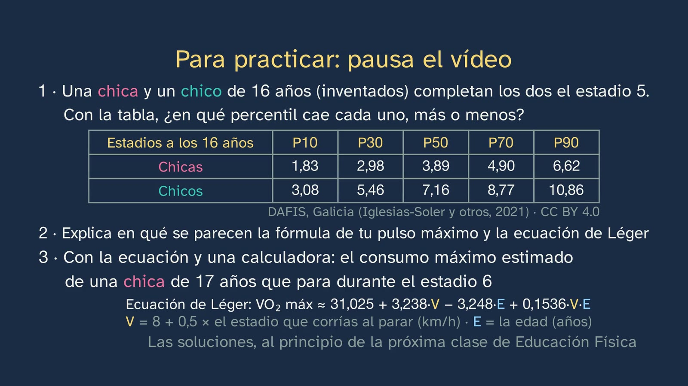

Medirse sin hacerse daño
En pocas palabras
La clase responde al enigma con que acabó la anterior: si tu pulso máximo sólo se mide hasta el agotamiento, ¿cómo se mide tu forma física sin hacerte daño, y cuánto puedes fiarte de tu número?
El hilo es una prueba que casi todo el alumnado ha corrido: la de los pitidos (ida y vuelta de 20 m, course navette). Se oye de verdad: los pitidos, sintetizados desde el protocolo, con un corredor que va de línea a línea a la velocidad de la prueba. El alumno predice cuánto dura un tramo en el estadio 1 y en el 10 (8,5 y 5,5 s). La prueba es de Luc Léger, de la Universidad de Montreal: su primera versión publicada, de 1982, era para adultos; la de los escolares, con un estadio cada minuto, es la de hoy.
Qué mide cada prueba. Medirse para la salud no es medirse para competir. La batería ALPHA-Fitness (presentada en 2011 por la Universidad de Granada y el Instituto Karolinska, en un proyecto financiado por la Unión Europea) llena cuatro cajas: corazón y pulmones (la de los pitidos), músculos (prensión manual y salto horizontal), cómo te mueves (el 4 × 10 m) y composición del cuerpo (talla, peso y cintura). Y cada prueba, de cerca, con cómo se hace según el manual y qué te dice: la prensión manual con el dinamómetro del manual (de pie, el brazo estirado y sin tocar el cuerpo, el agarre ajustado a la mano, al menos 2 s; dos intentos con cada mano y el mejor de cada una): la fuerza de la mano y el antebrazo, y una idea rápida de la fuerza en general (Wind y otros, 2010); el salto horizontal, con el de Muybridge (1887) y el de la captura de movimiento real (CMU), a cámara lenta (dos intentos, de la línea al talón más cercano): la fuerza explosiva de las piernas; el 4 × 10 m, tramo a tramo, cambiando las esponjas (dos intentos, el mejor tiempo): la velocidad, la agilidad y la coordinación, las capacidades coordinativas del decreto; y la composición del cuerpo: el índice de masa corporal, con la talla y el peso, y la cintura, que da una idea de la grasa abdominal, la más ligada al riesgo cardiovascular (verificación, filas E y N). Por qué esas: sencillas, seguras con su protocolo y, la capacidad aeróbica, ligada a la salud futura (Ruiz y otros, 2009). En 2024, 169 expertos de 50 países se quedaron con cuatro (YFIT).
¿Mide bien? Fiable y válida, con dos básculas de cocina y una pesa de 1 kg de las de comprobar básculas (un paquete de harina no tiene por qué pesar un kilo justo): cada pesada deja su punto en una recta. La validez de la de los pitidos frente al laboratorio (el consumo máximo de oxígeno, medido con máscara), la ecuación de Léger leída (la velocidad suma; la edad, en conjunto, resta, y tiene sentido por la economía de carrera) y su margen (unos 6 ml/kg/min). La fiabilidad, repetida en colegios españoles (España-Romero y otros, 2010) y en una revisión de 32 estudios (Artero y otros, 2011): por eso sirve para seguirte a ti.
Tu número. El percentil como tu sitio en una fila de cien de tu edad y tu sexo, con los datos reales de DAFIS (Galicia) y su coincidencia con HELENA; por qué hay tablas para chicas y para chicos (y cuánto se solapan); que cada prueba tiene su tabla (a los 16 años, el del medio: 148 y 193 cm en el salto, 48 y 70 kg en la prensión con las dos manos, 12,8 y 11,2 s en el 4 × 10 m, chicas y chicos), y que en el 4 × 10 m menos es mejor, así que el percentil 10 es de los más rápidos; la composición del cuerpo no se ordena: se mira en privado; la otra lectura, frente al umbral de salud de Ruiz y otros (2016): en la fila, más o menos uno de cada tres, chicos y chicas, queda por debajo. Y lo más útil: compararte contigo, porque la capacidad aeróbica se entrena.
Sin hacerte daño. El protocolo del manual (antes, durante y la propia prueba, que acaba en tu límite), la composición del cuerpo en privado y el contrapeso: moverse es mucho más seguro que no moverse (Warburton y otros, 2011). El error típico: «una prueba física es, sobre todo, una nota». La pregunta abierta, sin veredicto: ¿debería contar tu marca en la nota?
Objetivo. Al terminar, el alumnado sabrá qué mide cada prueba de la batería ALPHA-Fitness (la resistencia, la fuerza, la coordinación y la composición corporal), qué quiere decir que una prueba sea válida y fiable, cómo se lee su resultado en un percentil y cuáles se hacen sólo en clase, con su profesor.
Currículo
Real Decreto 243/2022, Educación Física, materia común de 1.º de Bachillerato. Citas comprobadas en el texto del laboratorio, copia del consolidado del BOE (comprobado el 05/10/2026 al diseñar el tema).
| Elemento | Qué dice el decreto | Dónde se trabaja |
|---|---|---|
| Saber básico (bloque A, «Vida activa y saludable», salud física) | «Autoevaluación de las capacidades físicas y coordinativas (como requisito previo a la planificación): técnicas, estrategias y herramientas de medida.» | Toda la clase: las herramientas (la batería ALPHA-Fitness, 5:13–9:00), con qué fiarse de ellas (9:00–13:18) y cómo se lee su resultado (13:27–17:48); la propia frase del decreto desmonta el error típico (19:54) |
| Competencia específica 1 | «Interiorizar el desarrollo de un estilo de vida activo y saludable, planificando responsable y conscientemente su actividad física a partir de la autoevaluación personal en base a parámetros científicos y evaluables…» | La autoevaluación con parámetros científicos: qué mide cada prueba, cuánto se equivoca y frente a qué se lee (percentil, umbral de salud, tú mismo) |
| Descriptor STEM2 (de la CE1) | «… apreciando la importancia de la precisión y la veracidad y mostrando una actitud crítica acerca del alcance y limitaciones de los métodos empleados.» | La validez moderada de la ecuación de Léger y su margen (10:50–12:43); las reglas de puntuación (14:23) |
| Criterio 1.1 | «Planificar, elaborar y poner en práctica de manera autónoma un programa personal de actividad física […] evaluando los resultados obtenidos.» | El punto de partida medible del programa del tema 3: tus números de clase, que se repiten dentro de unos meses (17:12 y 20:33) |
| Criterio 1.4 | «… aplicando con autonomía e independencia criterios científicos de validez, fiabilidad y objetividad a la información recibida.» | Fiable y válida, con las básculas (9:00–10:14); la validez de la de los pitidos (10:14–12:43) y la fiabilidad de la batería (12:43) |
El decreto no nombra ninguna prueba. La batería ALPHA-Fitness es la concreción del canal dentro de «técnicas, estrategias y herramientas de medida» (ficha del tema). La ESO ya trae los «criterios científicos de validez, fiabilidad y objetividad» (criterio 1.5 de 3.º y 4.º): la clase los recupera y los lleva a una prueba concreta, con números.
Lo que hay que traer. De la clase 2, que la máxima se mide hasta el agotamiento, que una fórmula da una media con su margen y cómo se toma el pulso; de la ESO, el calentamiento y la validez y la fiabilidad. Para la ecuación, sumar y multiplicar con calculadora.
Cómo está construida la clase
Capítulos del vídeo
| Parte | Qué pasa | Por qué así |
|---|---|---|
| Lo que ya sabes y las soluciones | ¿Te puedes medir tú solo la máxima? (0:23, pausa): no, y de ahí la pregunta de hoy. Las tres soluciones de la clase 2, cada una con su enunciado y los pulsos reales de NHANES (0:55–2:44) | Recuperar (Roediger y Karpicke, 2006) con la idea que abre la clase |
| La prueba de los pitidos | El gancho (2:44); de dónde sale (2:52); cómo es, con el corredor real (CMU); la predicción (3:36) y los pitidos, que se oyen (3:51–4:22); por qué se acelera y cuándo acaba (4:22) | Predecir antes de ver; el protocolo convertido en lo que se oye |
| La misión | Cinco pasos, con su recorrido arriba (4:51) | Cada cambio de parte, anunciado |
| Qué mide cada prueba | Salud o competición; las cuatro cajas vacías (5:13); ALPHA-Fitness y cómo se eligió (5:35); cada prueba de cerca, con su protocolo y qué te dice: la prensión (6:12), el salto de Muybridge y el de la captura de movimiento (6:39), el 4 × 10 m (7:16) y la composición del cuerpo (7:50); por qué esas (8:16); YFIT, con las cuatro cajas llenas (8:44) | Primero la forma vacía y después lo que la llena; lo real, grande |
| ¿Mide bien? | Dos básculas (9:00–10:14, para y piensa en 9:31); la validez frente al laboratorio (10:14–11:27); la ecuación con su deslizador, leída (11:27–12:19), y su margen (12:19); la fiabilidad (12:43) | La ficha del estudio antes del resultado; pensar lo que se calcula (ADR-099): la edad en la ecuación |
| A mitad | Isidora: «estas pruebas son fiables, y casi todas, válidas; pero dan una estimación» (13:18) | |
| Tu número | El percentil como tu sitio en la fila (13:27–14:09); ¿dónde está el del medio? (14:09, pausa); DAFIS y HELENA (14:23); tu estadio 6 para un chico y para una chica, y por qué dos tablas (14:55); cada prueba, su tabla, y en el 4 × 10 m menos es mejor (15:46); el umbral de salud (16:30); compárate contigo, y se entrena (17:12) | Cada persona, un sitio; chicas y chicos siempre en pareja |
| Sin hacerte daño | El protocolo en tres columnas, con la pista viva y alguien que vigila (17:48–19:22); el cuestionario (18:11); la composición del cuerpo, en privado (19:22); el contrapeso (19:36) | La seguridad como gesto, no como lista |
| El error típico | «Es, sobre todo, una nota», desmontado con el propio decreto (19:54–20:33) | El error, a la vista (Muller y otros, 2008); sin dar veredicto sobre la pregunta abierta |
| En tu clase y para practicar | Tus números de clase, con un ejemplo entero que se compara meses después (en el 4 × 10 m, menos es mejor), y las tablas, con su salida (20:33); quién mide de oficio (21:17); el resumen, tres ejercicios, la pregunta abierta y el enigma de la clase 4 (21:31–23:50) | Espaciar: el ejercicio 2 vuelve a la clase 2 |
Puentes con otras materias. Matemáticas: los percentiles y la mediana; una ecuación lineal con un término cruzado (V·E) y cómo se lee el efecto de una variable con la otra fija; el error típico de una estimación. Biología, Geología y Ciencias Ambientales: el consumo de oxígeno, la hemoglobina y los cambios de la pubertad. Física y Química: velocidad, distancia y tiempo en cada tramo (72 / v segundos).
Plan de una sesión de 50 minutos
Pensado para el aula con proyector o como clase invertida. Si se ve en casa, la sesión puede ser la actividad de abajo, en el pabellón.
| Minutos | Qué se hace |
|---|---|
| 0–3 | Sin vídeo. «Antes de empezar», en la hoja: ¿qué crees que mide la prueba de los pitidos? Para sí. |
| 3–12 | Vídeo hasta 4:51. Parar en 3:36 (la predicción de los tramos) y comprobarla con los pitidos. |
| 12–23 | Vídeo hasta 13:18. Parar en 9:31 (las básculas) y discutirlo en parejas antes de seguir. |
| 23–33 | Vídeo hasta 17:48. Parar en 14:09 (¿hasta qué estadio llega el del medio?). |
| 33–40 | Vídeo hasta el final. |
| 40–50 | Por parejas, los ejercicios 1 y 3 con la tabla y la calculadora; puesta en común del método, nunca de los números de nadie. |
Errores típicos y cómo se tratan
- «Una prueba física es, sobre todo, una nota.» El decreto pone la autoevaluación «como requisito previo a la planificación»: sirve, antes que nada, para saber de dónde partes. La clase no dice que no pueda contar en la nota: eso es una cuestión discutida, y la deja abierta (19:54 y 23:02). En Cataluña, el currículo de la ESO lo dice así: la valoración de la condición física «no ha de tenir una finalitat qualificadora» (Decret 175/2022, anexo 3, Educación Física, competencia 1); el de Bachillerato no lo dice.

- «La prueba de los pitidos mide tu consumo máximo de oxígeno.» Lo estima. La ecuación de Léger (1988) se sacó con 188 chicos y chicas de 8 a 19 años, con el oxígeno medido al parar y la curva de recuperación prolongada hacia atrás (retroextrapolación), no en cinta; su error típico es de 5,9 ml/kg/min (12,1 %; citado por Welsman y Armstrong, 2019, y De Menezes y otros, 2019). Frente al laboratorio, el metaanálisis de Mayorga-Vega y otros (2015) da una validez de criterio moderada en niños (r ≈ 0,78) y alta en adultos (0,94). La clase lo dice en 10:50–12:43.

- «Mi estadio es mi estadio.» Cada protocolo puntúa a su manera: Léger usa el último estadio anunciado; ALPHA y FitBack, el último medio estadio completado; DAFIS, el último estadio completo. Un estadio de DAFIS metido tal cual en la ecuación de Léger da, a los 16 años, unos 2,8 ml/kg/min menos (cálculo del canal). Por eso la clase dice «estadios completos» en la fila y «el estadio que estabas corriendo» en la ecuación, y avisa de que tu número sólo se compara con una tabla si te mediste con sus reglas (14:23).
- «Fiable y válida son lo mismo.» Una medida puede ser fiable y no válida (la báscula 1: siempre 950 g). Una que no es fiable no puede ser válida (la báscula 2). La clase lo hace con una pesa de comprobar básculas, no con el peso de cada cual (9:00–10:14).

- «Si estoy en la media, estoy sano.» El percentil te compara con los de tu edad; el umbral de salud, con lo que necesita tu corazón (Ruiz y otros, 2016: 41,8 ml/kg/min en chicos y 34,6 en chicas; por debajo, es más probable tener ya factores de riesgo cardiovascular). Pasado a estadios completos de DAFIS a los 16 años con la ecuación de Léger (cálculo del canal: 6 en los chicos y 3 en las chicas), queda por debajo más o menos uno de cada tres, chicos y chicas (16:30).

- «Las chicas no pueden.» La diferencia es de media y crece con la pubertad (más masa muscular y más hemoglobina en los chicos; Handelsman y otros, 2018; Armstrong y Welsman, 2019); de media, además, ellas se mueven menos (clase 1), y eso también puede sumar, aunque nadie ha medido cuánto. Hay mucho solapamiento: en DAFIS, a los 16 años, la chica del percentil 90 corre como el chico del 43 (14:55). Por eso cada uno se compara con su tabla, y sobre todo consigo.
- «En las tablas, un percentil alto siempre es mejor.» No en las pruebas de tiempo: en el 4 × 10 m menos segundos es mejor, y en la tabla de DAFIS el percentil 10 es de los más rápidos (10,0 s en los chicos de 16 años). La clase lo enseña con una fila que, al revés que la de los pitidos, baja (15:46).
Preguntas y soluciones
Para y piensa y predicciones (dentro del vídeo)
- Tu pulso máximo, ¿te lo puedes medir tú solo? (0:23) No: hace falta un esfuerzo hasta el agotamiento, dirigido por alguien que sepa, en un laboratorio o en clase (clase 2).
- En el estadio 1, ¿cuántos segundos tienes para cada tramo? ¿Y en el 10? (3:36) 72 / v: 8,47 s a 8,5 km/h y 5,54 s a 13 km/h.
- Esa báscula, ¿es fiable? ¿Es válida? (9:31) Fiable sí (da lo mismo); válida no (siempre 50 g de menos).
- El chico del medio de la fila, ¿hasta qué estadio llega? ¿Y la chica? (14:09) En DAFIS, a los 16 años, la mediana es 7,16 estadios completos en los chicos y 3,89 en las chicas.
Para practicar (las soluciones abren la clase 4)
- Una chica y un chico de 16 años, inventados, completan los dos el estadio 5: ¿en qué percentil cae cada uno, más o menos? La chica, entre el P70 (4,90) y el P90 (6,62): hacia el percentil 71. El chico, entre el P10 (3,08) y el P30 (5,46): hacia el 26 (interpolación lineal, cálculo del canal). El mismo número dice cosas distintas en cada tabla. Criterios: leer la tabla de su sexo, situarse entre dos percentiles y no confundir el percentil con una nota.
- Explica en qué se parecen la fórmula de tu pulso máximo y la ecuación de Léger. Las dos salieron de medir a mucha gente y dan una estimación: la media de quienes se parecen a ti en lo que la fórmula mira (la edad; en Léger, también la velocidad), con su margen (unos 17 latidos con cada persona en la máxima; unos 6 ml/kg/min en la de Léger). Ninguna da tu número exacto: para eso hace falta medirlo de verdad, con un esfuerzo hasta el agotamiento o con una máscara en el laboratorio. Las dos sirven para empezar y para seguirte a ti mismo, siempre con la misma. Criterios: «estimación» frente a «medida», el margen y para qué sirven (espaciado: clase 2).
- Con la ecuación de Léger, el consumo máximo estimado de una chica de 17 años que para durante el estadio 6. V = 8 + 0,5 × 6 = 11 km/h; 31,025 + 3,238 × 11 − 3,248 × 17 + 0,1536 × 11 × 17 = 31,025 + 35,618 − 55,216 + 28,723 ≈ 40,2 ml/kg/min (cálculo ejecutado). Con su margen, unos 6 arriba o abajo. Para nota: está por encima del umbral de salud de las chicas (34,6), aunque con el margen no se puede asegurar del todo.

Para seguir pensando. Tu marca en estas pruebas, ¿debería contar en tu nota de Educación Física? No tiene respuesta de libro, y la clase no da veredicto (artículo 9 de la Constitución del canal). Pistas para el debate: en contra de usar la marca para calificar, SHAPE America (2017: «students' fitness scores should not be used to grade students», porque dependen también de la genética, del momento del estirón, del punto de partida y de las oportunidades de moverse) y Cale y Harris (2009); a favor, la práctica de departamentos que la cuentan porque la condición física se trabaja en la materia (el criterio 1.1 habla de «evaluar los resultados obtenidos»). Hay una tercera vía que se puede discutir: evaluar la planificación y la mejora de cada cual, no la marca. No hemos encontrado ninguna fuente académica que defienda calificar con la marca; los autores que defienden medir en la escuela (Ortega, Ruiz, Lang, Welk, Tomkinson) lo hacen para vigilar la salud, no para poner nota.
Una actividad para el aula
Fiable o no, en el pabellón (unos 20 minutos, en parejas; trabaja la CE1 y el criterio 1.4).
- Calentamiento de 5 a 10 minutos, como en la clase.
- Cada cual, si quiere y puede, hace dos saltos horizontales sin carrerilla, como en el manual ALPHA (pies a la anchura de los hombros, se mide de la línea al talón más cercano); la pareja mide y apunta los dos. Quien no salte, mide.
- Sin escribir nombres, en la pizarra: la diferencia entre el primer y el segundo salto de cada pareja. ¿Es pequeña frente al salto? Eso es la fiabilidad. ¿Qué la empeora (medir distinto, caer hacia atrás, no calentar)?
- Con la tabla de DAFIS del salto a los 16 años (chicos: P10 153, P30 177, P50 193, P70 208, P90 229 cm; chicas: 118, 135, 148, 161, 181 cm), cada cual busca su percentil para sí.
- Discusión: ¿qué decimos con ese número, y qué no podemos decir?
Para el profesorado: nadie enseña sus números; lo que se discute es el método. Suelo que no resbale y espacio para caer. Quien tenga una lesión o no quiera, mide.
Recursos abiertos: datos y guías
| Recurso | Qué cubre | Cómo usarlo en clase |
|---|---|---|
| FitBack (https://www.fitbackeurope.eu/es-es/) | Valores de referencia europeos con las pruebas ALPHA, de 6 a 18 años: percentiles y zonas de salud; gratis, en español y sin guardar los datos | Que cada cual meta sus marcas de clase y vea su informe (puntúa la de 20 m por medios estadios) |
| DAFIS, Iglesias-Soler y otros (2021), Frontiers in Psychology (https://doi.org/10.3389/fpsyg.2021.627834, CC BY 4.0) | Percentiles por edad y sexo de 15 287 escolares gallegos (2012–2020): 20 m, salto, prensión (suma de las dos manos) y más | Leer tablas de percentiles reales; comparar chicas y chicos |
| Manual de la batería ALPHA-Fitness (https://profith.ugr.es/wp-content/uploads/2022/10/MANUAL-INSTRUCCIONES-ESPAN_OL.pdf) | El protocolo de cada prueba, el modelo de seguridad y una hoja de registro | Preparar las pruebas en el pabellón |
| PAR-Q+ en español (https://eparmedx.com/wp-content/uploads/2023/12/Spanish.pdf) | El cuestionario de aptitud para la actividad física (todos los derechos reservados: se fotocopia entero, sin cambios) | Antes de las pruebas máximas, con las familias |
| SHAPE America (2017), «Appropriate and inappropriate practices related to fitness testing» | Buenas prácticas: privacidad, no calificar con la marca, no publicar resultados | El debate de la pregunta abierta |
Notas para el profesorado
- Cómo validó Léger. En 1988, con 188 escolares de 8 a 19 años que corrían la prueba de uno en uno: nada más parar, se medía el oxígeno en cuatro muestras de 20 s y se prolongaba la curva hacia atrás hasta el instante de parar (retroextrapolación). No se comparó con una cinta (Léger y otros, 1988; Mahar y otros, 2011). La versión de un minuto por estadio ya se había aplicado en 1981 a 7024 escolares de Quebec (Léger y otros, 1984).
- La edad en la ecuación. A igual velocidad, cada año más baja la estimación entre 1,9 (8,5 km/h) y 1,25 ml/kg/min (13 km/h). Encaja con la economía de carrera: los niños gastan más oxígeno por kilo para correr igual (Krahenbuhl y Williams, 1992), y ese gasto baja alrededor de 1 ml/kg/min por año (Cureton y otros, 1997, 145 escolares). Que Léger la pusiera por eso no lo dice ninguna fuente: la clase dice «tiene sentido».
- El umbral de salud a los 16 años. Ruiz y otros (2016) sólo lo pasan a estadios para los 15 años (6 en los chicos y 3 en las chicas). La clase hace la misma cuenta a los 16 con la ecuación de Léger (estadio anunciado 6,03 y 3,50) y lo pasa a estadios completos de DAFIS (6 y 3): es un cálculo del canal, y la clase lo dice.
- El dinamómetro a los 16. La tabla del manual ALPHA para ajustar el agarre es de 6 a 12 años; para adolescentes, las ecuaciones de Ruiz y otros (2006, J Hand Surg Am): chicos, y = x/7,2 + 3,1 cm; chicas, y = x/4 + 1,1 cm (x, el palmo).
- Una tendencia. La capacidad cardiorrespiratoria de niños y adolescentes bajó un 7,3 % de 1981 a 2014 en 19 países de renta alta o media-alta, y se estabilizó hacia 2000 (Tomkinson y otros, 2019). No sale en el vídeo.
- El salto de Muybridge. La lámina de Animal Locomotion (1887) es de dominio público; el atleta va con taparrabos.
Lo que la clase deja fuera, y por qué
- El consumo máximo de oxígeno por dentro: tema 2, clase 2.
- Las zonas de intensidad (cómo medir que un esfuerzo es intenso): tema 3, clase 2.
- La prueba de Cooper: la clase se queda con la batería ALPHA, que es la que usan las tablas españolas.
- La flexibilidad: no está en ALPHA; la velocidad y la flexibilidad tendrán su clase en el tema 2 (ficha del tema).
- La composición corporal a fondo y la imagen del cuerpo: tema 4.
Fuentes
Currículo
- Real Decreto 243/2022, anexo II, Educación Física, texto consolidado (BOE): https://www.boe.es/buscar/act.php?id=BOE-A-2022-5521. Decret 175/2022 (ESO de Cataluña), anexo 3.
La prueba de 20 m
- Léger, L. A. y Lambert, J. (1982). European Journal of Applied Physiology, 49, 1–12. Léger, L. A. y otros (1984). Canadian Journal of Applied Sport Sciences, 9(2), 64–69. Léger, L. A., Mercier, D., Gadoury, C. y Lambert, J. (1988). The multistage 20 metre shuttle run test for aerobic fitness. Journal of Sports Sciences, 6(2), 93–101.
- Mayorga-Vega, D. y otros (2015). Journal of Sports Science and Medicine, 14, 536–547. Welsman, J. y Armstrong, N. (2019). BMJ Open Sport & Exercise Medicine, 5, e000627. De Menezes, F. J. y otros (2019). Revista Paulista de Pediatria, 37(2), 241–251.
- Krahenbuhl, G. S. y Williams, T. J. (1992). Medicine & Science in Sports & Exercise, 24(4), 462–466. Cureton, K. J. y otros (1997). Medicine & Science in Sports & Exercise, 29(2), 259–267.
La batería
- Ruiz, J. R. y otros (2011). British Journal of Sports Medicine, 45(6), 518–524, y el manual de la batería ALPHA-Fitness (Nutrición Hospitalaria, 26(6), 2011).
- Castro-Piñero, J. y otros (2010). BJSM, 44(13), 934–943. Artero, E. G. y otros (2011). International Journal of Sports Medicine, 32(3), 159–169. España-Romero, V. y otros (2010). International Journal of Sports Medicine, 31(7), 490–497. Ruiz, J. R. y otros (2009). BJSM, 43(12), 909–923.
- Ortega, F. B. y otros (2025). The YFIT battery. Journal of Sport and Health Science, 14, 101012.
Tu número
- Iglesias-Soler, E. y otros (2021). DAFIS. Frontiers in Psychology, 12, 627834 (CC BY 4.0). Ortega, F. B. y otros (2011). HELENA. BJSM, 45(1), 20–29.
- Ruiz, J. R. y otros (2016). BJSM, 50(23), 1451–1458.
- Handelsman, D. J. y otros (2018). Endocrine Reviews, 39, 803–829 (CC BY 4.0). Armstrong, N. y Welsman, J. (2019). Frontiers in Physiology, 10, 979 (CC BY 4.0).
- Baquet, G., van Praagh, E. y Berthoin, S. (2003). Sports Medicine, 33(15), 1127–1143. Armstrong, N. y Barker, A. R. (2011). Medicine and Sport Science, 56, 59–83.
Sin hacerte daño y la nota
- PAR-Q+ Collaboration (2023), PAR-Q+ en español. Warburton, D. E. R. y otros (2011). Applied Physiology, Nutrition, and Metabolism, 36(S1), S266–S298.
- SHAPE America (2017). Appropriate and inappropriate practices related to fitness testing. Cale, L. y Harris, J. (2009). Physical Education and Sport Pedagogy, 14(1), 89–108.
Movimiento e imágenes
- CMU Graphics Lab Motion Capture Database (sujeto 16, tomas 35 y 10): «The data used in this project was obtained from mocap.cs.cmu.edu. The database was created with funding from NSF EIA-0196217». Figuras: MakeHuman (CC0).
- Muybridge, E. (1887). Animal Locomotion, dominio público.
Sobre esta clase
Isidora es un personaje ilustrado y su voz es sintética. El guion lo escribió una IA (Claude, de Anthropic), lo revisó un agente independiente con la rúbrica del canal y lo aprobó una persona. Cada dato está comprobado en dos fuentes o en la original; los informes, con cada cita, están en el repositorio del canal. Si encuentras un error, dínoslo en el Ágora: aprender también es corregir.
Cómo citar esta ficha
GinCol Lab (2026). Medirse sin hacerse daño. Ficha docente de GinCol Lab: Educación Física · 1.º de Bachillerato · Tu cuerpo, tu laboratorio · Clase 3 de 4. https://gincollab.github.io/aula/educacion-fisica/t01-c3/. CC BY 4.0.
Ficha docente de GinCol Lab · CC BY 4.0 · Código fuente y erratas